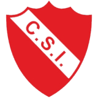
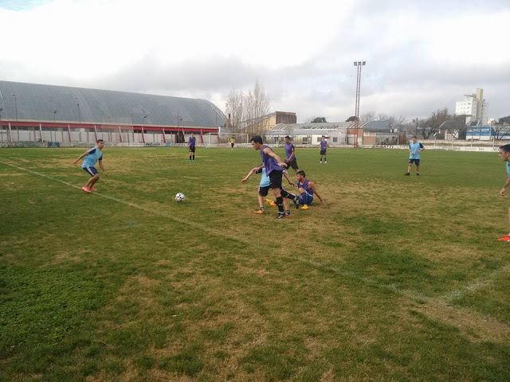
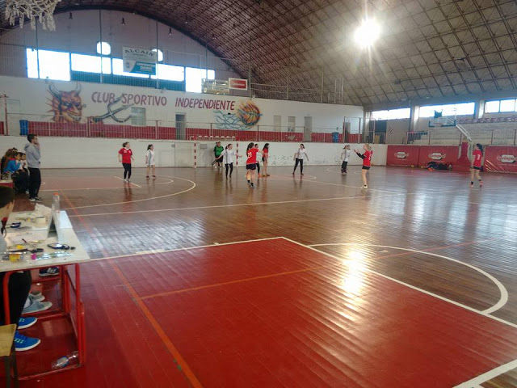
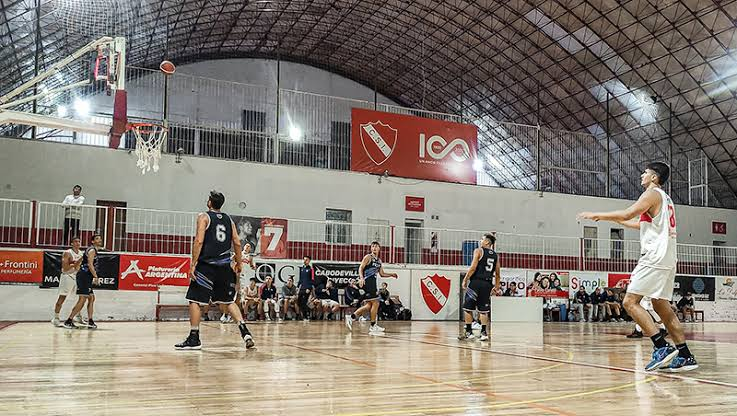

Club Sportivo Independiente
Club Sportivo Independiente, también conocido como Independiente de General Pico, es un club deportivo ubicado en General Pico, La Pampa. De los varios deportes que se practican en el club, Independiente fue más conocido por el equipo de básquetbol, que ganó un título de la Liga Nacional de Básquet y fue 3 veces subcampeón, además de campeón Sudamericano. Su clásico rival (que empezó siéndolo en el fútbol pero la rivalidad se trasladó a otros deportes) es el Pico Fútbol Club.
Actividades realizadas en la institución
Fútbol
Básquetbol
Voleibol y Newcom
Hockey sobre césped
Handball




Ubicación de la institución
Fútbol
Primera División
| Pos | Club | Pt | Pj | Pg | Pe | Pp | Df |
|---|---|---|---|---|---|---|---|
| 2 | Club Atlético y Cultural Argentino |
23 | 11 | 7 | 2 | 2 | 10 |
Para más información acerca de la liga pampeana de futbol puede visitar la siguiente página. Liga Pampeana